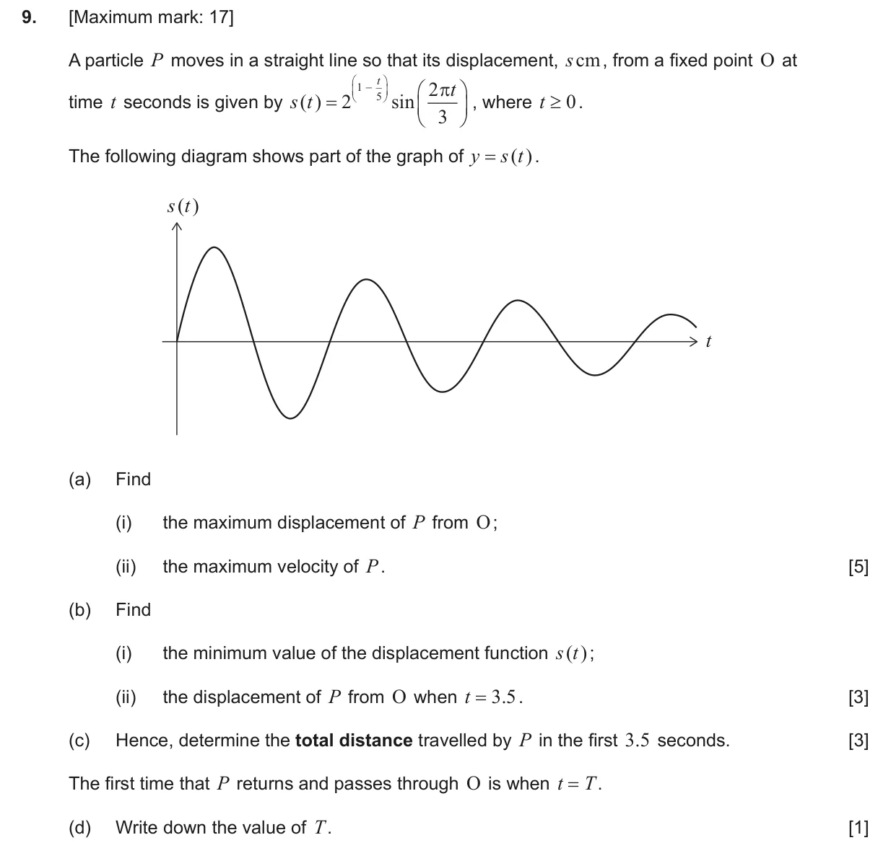
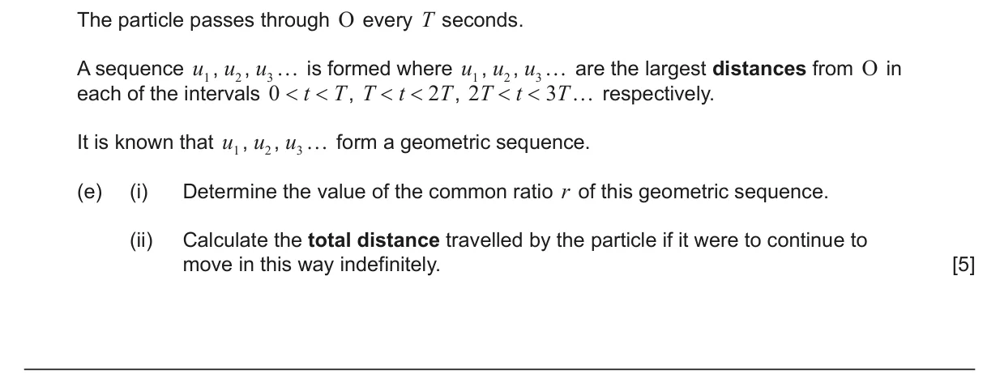
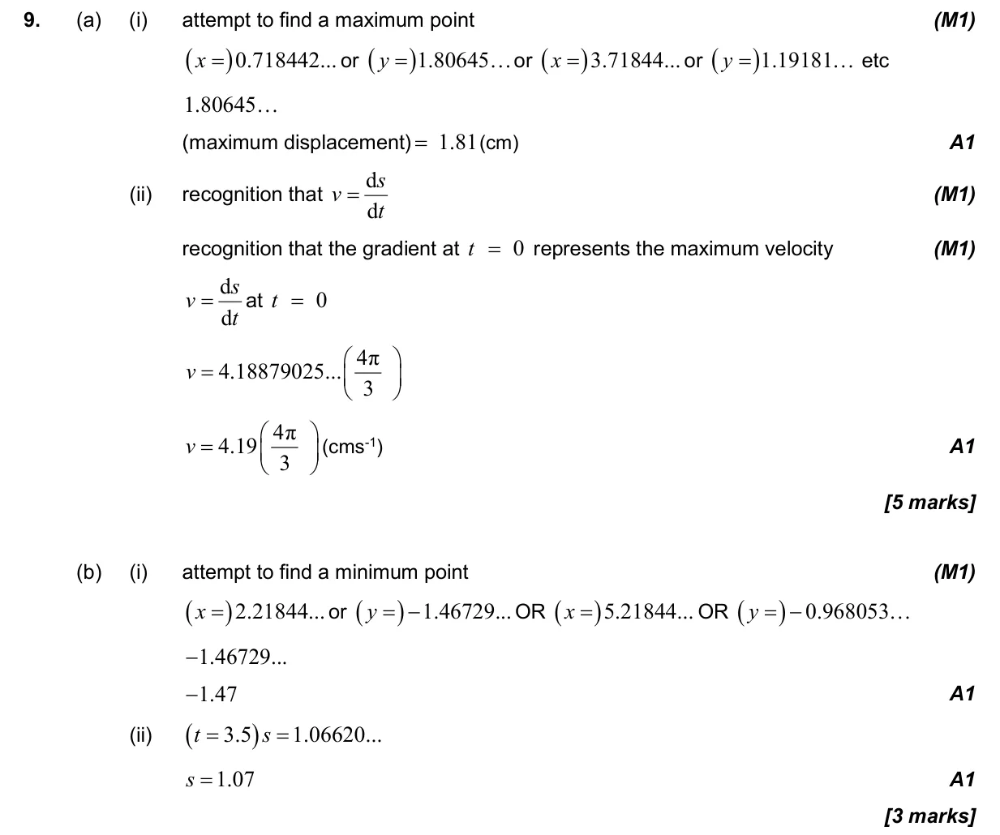
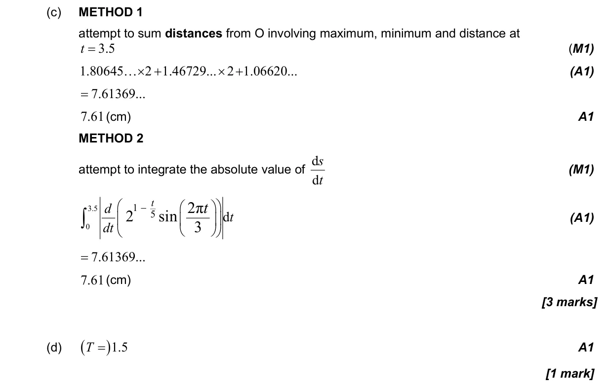
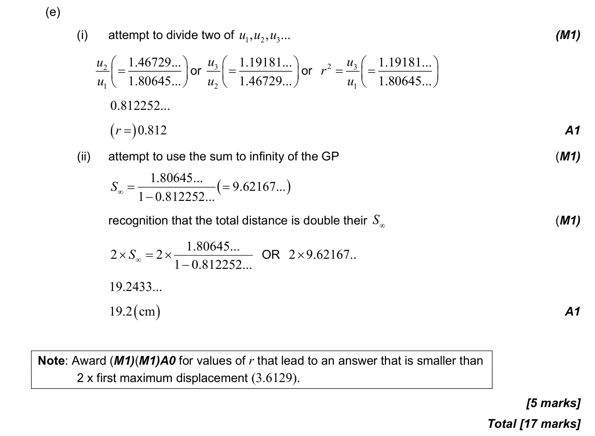

17 marks P2 TZ3 Section B Calculator Appears in AA SL P2 Q9AA HL P2 Q10 5.9 Kinematics problems2.4 Key features of graphs1.8 Sum of infinite geometric sequences1.3 Geometric sequences and series3.7 Circular functions: graphs, composites and transformations Question Hide breakdown abcde Markscheme 